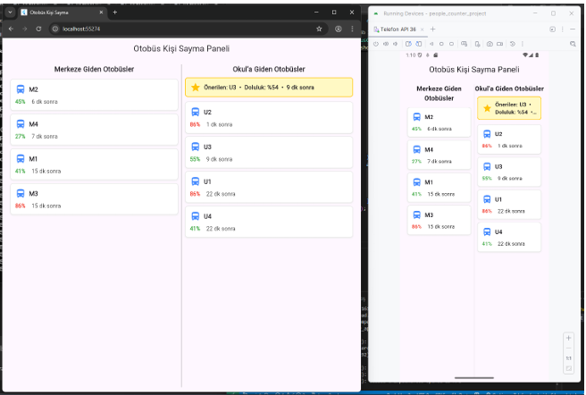

TÜBİTAK 2209-A destekli
Toplu Taşımada Gerçek Zamanlı Doluluk Takibi
Lisans bitirme projem. Araç içi kameralardan gelen görüntülerde yolcuları YOLO modeliyle tespit edip doluluk oranını hesaplıyor, sonucu web ve mobil uygulamaya anlık gönderiyor.
GitHub'da incele